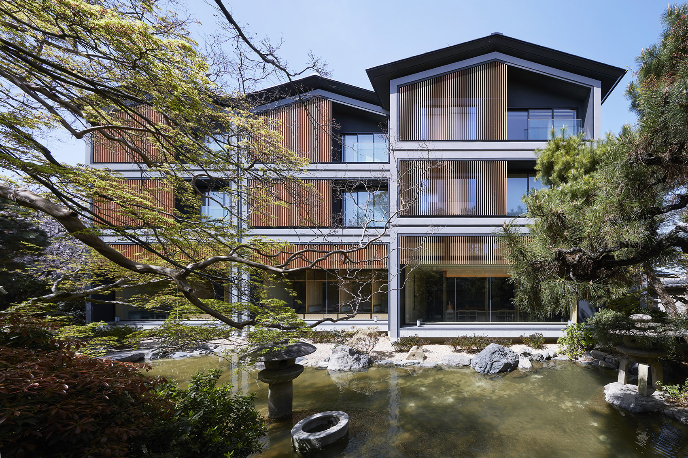

方案 01 推荐
独立关闭
在最右侧直接关闭浮框。Logo 保持品牌标识，按钮含义一眼可辨。
● ● ●
example.org / projects / courtyard
建筑参考 / 庭院空间示例页面
木格栅与庭院之间
建筑参考 · 立面与材料

图片工具
图片浮框已关闭
操作方式
关闭后，本插件的图片浮框停止出现；可在刚出现的提示中撤销，也可以从浏览器右上角 Logo 菜单重新开启。
本页按钮只演示交互，不下载图片或请求 AI。ArchBuddy图词库
描述你想找的图片…
详情只保留必要信息
最上方显示来源网页，其后是保存时间；去掉重复的项目、分类。概要描述与后续操作保留。
ArchBuddy
服务可用网页图片浮框
已开启
图片上保存参考图，侧边栏处理提示词。
一个入口，
两个去处。
图库用于整理与回看素材。
侧边栏用于生成和优化提示词。
保留图片浮框总开关，关闭后仍能方便找到开启入口。